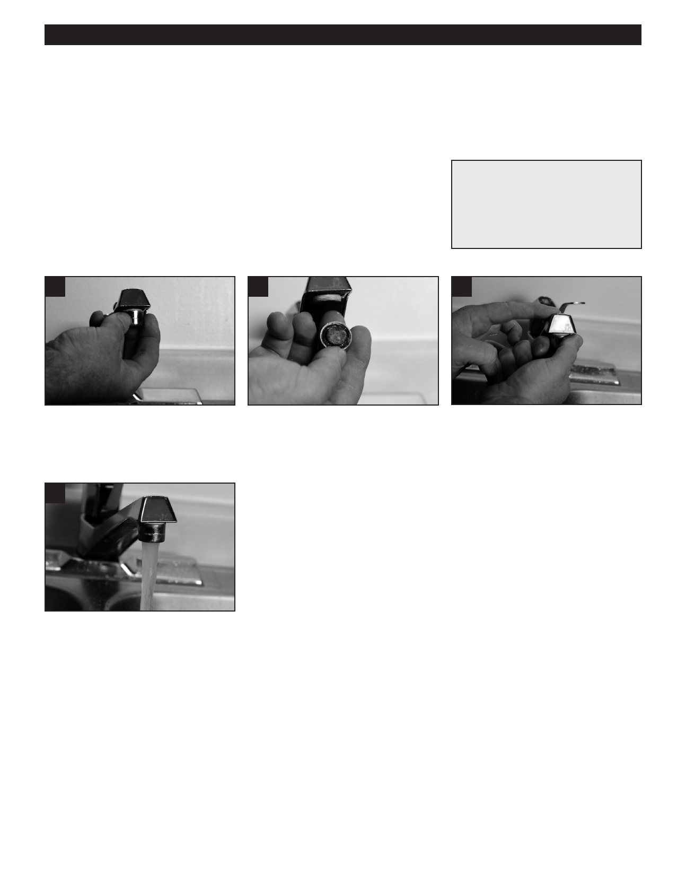

PA RT I C I PA N T R E S O U R C E G U I D E
Cleaning an Aerator
Aerators can become clogged with minerals from hard water or other sediment. If water
does not flow freely from a faucet, try cleaning the aerator first.
Safety
No special safety steps required, though you may want to wear gloves if working
Tools and Materials Needed
with vinegar.
Small brush (to remove
sediment if needed)
Vinegar (to remove sediment,
if needed)
How-to Steps
1
2
3
1. Unscrew (counterclockwise) the
2. Flip upside-down and flush the
3. Screw the aerator back on the
aerator at the end of the faucet.
aerator screen with water to remove
faucet.
sediment. If the screen is broken,
replace aerator.
4
4. Turn on the water and check flow.
Notes:
24